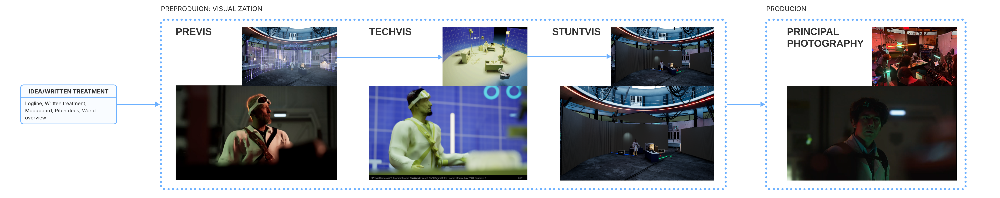
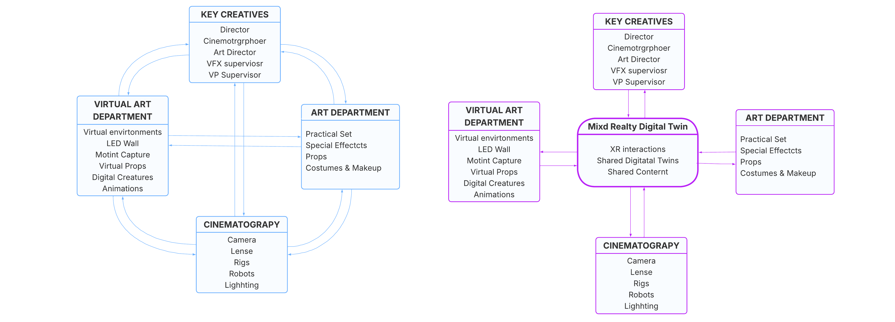
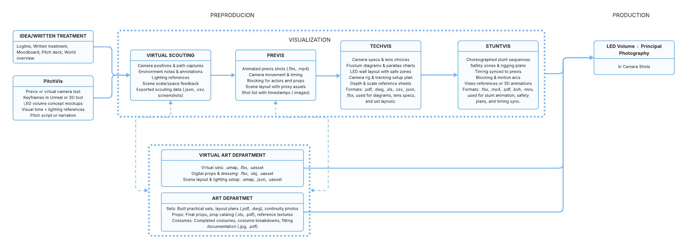

To merge physical and virtual worlds, our MR digital twin framework creates a shared synchronous/asynchronous space where digital twins of ICVFX equipment, prop and set scans, and motion captures enable previz, techviz, and stuntviz role-based interactive visualizations, culminating in final on-set overlays that enhance collaborative efficiency and training accessibility.
Mixed Reality Prototype Demo on LED Volume


Mixed Reality Prototype Demo on LED Volume: Meta Quest 3 View
Mixed Reality Digital Twin Prototype Demo on Remote Location
LED Wall Digital Twin: Layerd Representations Based on Pipeline Stage (Previz, Techviz, Stuntviz, Onset), Location, and Role
Digital Twin Representations of Currently Available ARRA 216 and Red Studio Stages
Current ICVFX Pipeline
Departmental Interactions: Left – Current Decentralized Interaction; Right – Shared Mixed Reality Digital Twin for Symmetric/Asymmetric Collaboration
Data Flow of The Current ICVFX Pipeline
Problem
Virtual production (VP) aims to merge physical and digital filmmaking, yet key departments still work in separate realities.
- The Art Department builds sets, props, and costumes.
- The Virtual Art Department (VAD) creates digital environments.
- Directors, DPs, and gaffers juggle both worlds without a single shared space.
Collaboration relies on static artifacts: images, PDFs, video clips that lose crucial context such as:
- Set alignment
- Camera motion and rig reach
- Lighting layouts
- Precise measurements
This siloed process leads to plan to execution drift, costly rework, and slower decision-making.
Key Directions (Distilled)
- Role Aware Collaboration: Views, tools, and permissions tailored to Director, DP, Gaffer, VAD and Art roles across all pipeline stages.
- Physical/Digital Parity: Keep physical assets and their digital twins perfectly mirrored so changes in one context instantly appear in the other.
- Shared State & Provenance: Maintain a single, restorable planning state with timestamps, authorship, and rationale supporting snapshots, versioning and comparison.
- Live Safety & Feasibility Intelligence: Provide real-time path clearance checks, collision heatmaps and rig-reach warnings before costly on-set issues occur.
Next Steps
- Iterative development & evaluation: Refine the Unreal plugin, integrate advanced constraint checks and telemetry, and run large-scale studies to measure how collaborative MR planning closes the gap between physical and virtual elements.
- Production deployment: Validate the framework in live projects at the Virtual Production Institute.
- Classroom role based training: Adapt the tools so students can practice collaborative planning when LED stages are busy or inaccessible.
- Community release: Package the framework as an Unreal plugin so studios can create digital twins of their own facilities by entering equipment specifications or using integrated 3D scanning; future research will explore automatic twin generation from images or video.
Motivation
- Provide a shared, context rich planning space where all departments can collaborate in real time.
- Preserve spatial and temporal accuracy from Previz through on-set stages.
- Align physical and virtual planning to reduce delays and costs.
- Support both live (synchronous) and remote (asynchronous) collaboration.
Our Approach
- Build a Mixed-Reality (MR) Digital Twin Framework inside Unreal Engine.
- Extend Virtual Scouting and Multi User Editing plugins with native MR passthrough and rich runtime interactions.
- Overlay true scale or desk scale digital twins of LED volumes, cameras, lighting gear, props, and motion-captured actors directly in the real environment.
- Enable every department to see, edit, and validate the same evolving plan, what is physical for one team becomes a faithful digital twin for another.
- Developed with feedback from Hollywood and commercial VP professionals, including supervisors and DPs with credits such as The Mandalorian.
- Demonstrated in a multi-user pilot on an LED stage using Meta Quest 3 headsets for collaborative, in-situ planning.
Key Features
-
Unreal Native Mixed Reality Passthrough:
Bring digital twins—such as LED stages or camera rigs—into any physical space, or place physical elements inside a virtual scene.
Scale from desk size miniatures to full stage rehearsals without re-authoring assets.
Example: A director previews a miniature LED stage remotely, then walks onto the actual stage to rehearse the same setup in MR. -
Layered Digital Twin Stages:
Toggle layers for context-specific visualizations: safety zones, rig reach limits, camera paths, animation curves and metadata overlays.
Visual styles include PBR, schematic shading, gridded overlays, and color-coded Techviz (yellow/blue for practical vs. virtual).
Example: A DP enables the camera path and rig-reach layers to ensure a planned crane shot clears LED walls. -
Modular Physical Virtual Substitution:
Replace or mix individual components—stands, lights, set pieces—between real and virtual worlds.
Example: A gaffer tests a real C-stand while positioning a virtual light with accurate photometrics. -
Role Aware Tools & Pipeline Stage Interactions:
Views, permissions and visual layers automatically adapt to user roles (Director, DP, Gaffer, VAD, Art) and production stages (Previz, Techviz, Stuntviz, Pre-light, On-set).
Example: A director plans blocking on a desk-scale model, then switches to room-scale MR to review actor motion and parallax; a VAD artist toggles to Techviz mode to inspect camera paths and decide what should be practical versus virtual. -
Live Feasibility & Safety Intelligence:
Real-time overlays provide collision heatmaps, rig reach envelopes, tracking bounds and no-go safety zones, giving early warnings before costly on-set issues arise.
Example: Before a stunt rehearsal, the system warns the stunt coordinator that a planned wire rig will collide with an overhead truss. -
Layered Annotations with Tag Library:
Add time-stamped notes, sketches and pre-built tags such as camera move, light change or safety notice.
Filter or export annotations by role or stage.
Example: During a remote Techviz session, the DP drops a “light change” tag and draws an arrow to indicate a spotlight adjustment. -
Versions, Variants & Pre-Configured Kits:
Branch and merge scene or shot versions, compare differences by layer, and promote approved elements to the master plan.
Load pre-configured kits, for example, a 6×3 LED bay or a full Techviz stunt rig—for instant side-by-side comparison.
Example: The production designer toggles between day and night lighting plans in seconds. -
Exportable Shot Packages & On-Set Playback:
Export shot packages capturing lens/rig paths, timings, light plots, enabled layers and annotations.
On set, crews can swap scenes or shots instantly, trigger camera moves, actor motion or lighting cues, and capture telemetry to flag deviations.
Example: When weather forces a sudden change, the DP reloads a saved shot package to re-cue lighting and camera moves in minutes. -
Rapid Digital Twin Creation:
Build digital twins of ICVFX equipment by entering specs and dimensions, or capture props and sets using mobile photogrammetry.
Example: The art team scans a practical tree prop and drops it into the MR workspace to check shadow placement before construction.